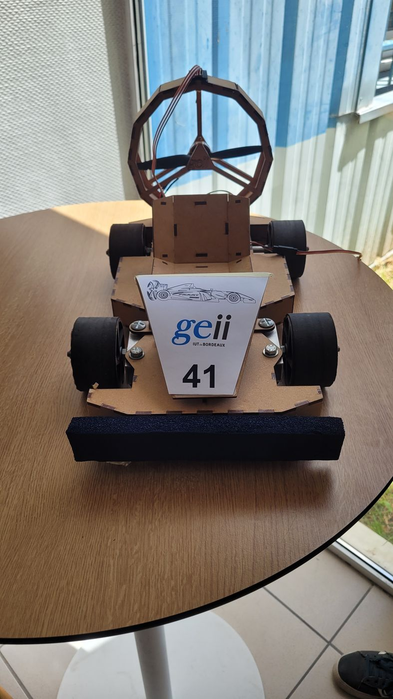

Électronique · Programmation — BUT GEII 1re année
Kart à Hélice Radiocommandé

Contexte
Dans le cadre de ma première année de BUT GEII, j'ai participé en groupe de six à la conception d'un kart à hélice radiocommandé par infrarouge. Le groupe était divisé en deux équipes de trois : l'une sur la carte réceptrice embarquée sur le kart, l'autre — dont je faisais partie — sur la télécommande émettrice.
Fonctionnement
L'utilisateur agit sur deux potentiomètres (vitesse et direction) ; la télécommande encode ces informations en trame infrarouge envoyée vers le kart. Elle s'organise en quatre blocs :
Alimentation
Une batterie et un régulateur LM78L05 fournissent une tension stabilisée.
Acquisition
Deux potentiomètres (vitesse, direction) et un bouton-poussoir.
Traitement
Un microcontrôleur ATmega328P lit les potentiomètres et encode la trame infrarouge.
Action
Des LEDs infrarouges TSAL6200 émettent la trame ; une LED verte signale la mise sous tension.
Le kart terminé

Ce que j'ai appris
Ce projet m'a permis de découvrir la programmation d'un microcontrôleur ATmega, la transmission de données par infrarouge, et la conception d'une chaîne complète, de l'interface utilisateur jusqu'à l'émission du signal de commande.